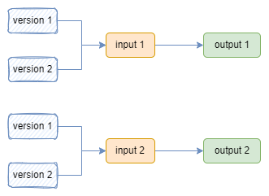
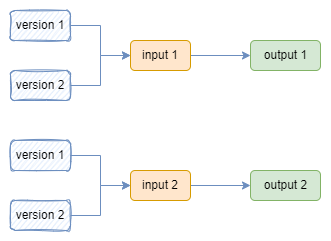

Salsa 和 functools.cache 有什么不同？
我第一次听说 Salsa，第一次听说增量计算（incremental computation）的时候，就有一个疑问：这和 Python 中的 functools.cache 有什么区别？
现在我对 Salsa 更熟悉了，再次面对这个问题的时候，仍然不能很好地回答这个问题，但也有些想法，先记录下来。
fn func(input: Input) -> Output {
// ...
}
fn main() {
...
let output1 = func(input)
let output2 = func(input) // do not need to execute func again
}
输入同样的 input，第二次调用 func 时，可以直接从缓存中读取结果，而不需要再次执行 func。对于每一个不同的 input，保存之前的计算结果，下次调用时先查找数据库，没有找到才执行计算，Python 中的 functools.cache 就是这么做的。当然，还可以使用一些缓存替换策略，比如 LRU， Python 中 functools.lru_cache 就是这么做的。
Salsa 是这么做的吗？显然不是。至少 Salsa 使用起来要比 functools.cache 复杂得多 ^_^。
我能明显感觉到，Salsa 和 functools.cache 是有很大区别的，但这个区别到底是什么，我好像又说不清楚。。。我好像有点思路，我尝试捋一捋
Salsa 想解决的问题，或者说适用的场景并不是我上面伪代码所示的，而应该像这样
fn main() {
let mut input = ...;
loop {
let output = your_program(&input);
modify(&mut input);
}
}
You start out with an input that has some value. You invoke your program to get back a result. Some time later, you modify the input and invoke your program again. Our goal is to make this second call faster by re-using some of the results from the first call.
-- https://salsa-rs.netlify.app/overview.html#goal-of-salsa
一个重要的点是，我们是在 loop 之中不断修改 input。如果换做 functools.cache，它解决的问题应该是
fn main() {
let input0 = ...;
let output = your_program(&input0);
let input1 = ...;
let output = your_program(&input1);
let input2 = ...;
let output = your_program(&input2);
...
}
Salsa 强调的是 input change，而 functools.cache 是没有 input change 的，只有不同的 input。
另一方面，在 functools.cache 中，每个 input 地位是同等的


而对 Salsa 来说，一个 input 如果发生了改变，那么它之前的版本就没有用了，所有为旧 input 保存的计算结果都可以丢弃了。Salsa 系统中，是没有太大的存储压力的，这一点和 functools.cache 是非常不一样的，完全可以以 Salsa 为核心写一个复杂软件，比如 rust-analyzer，但无法想象以 functools.cache 为核心构造一个软件。
 
